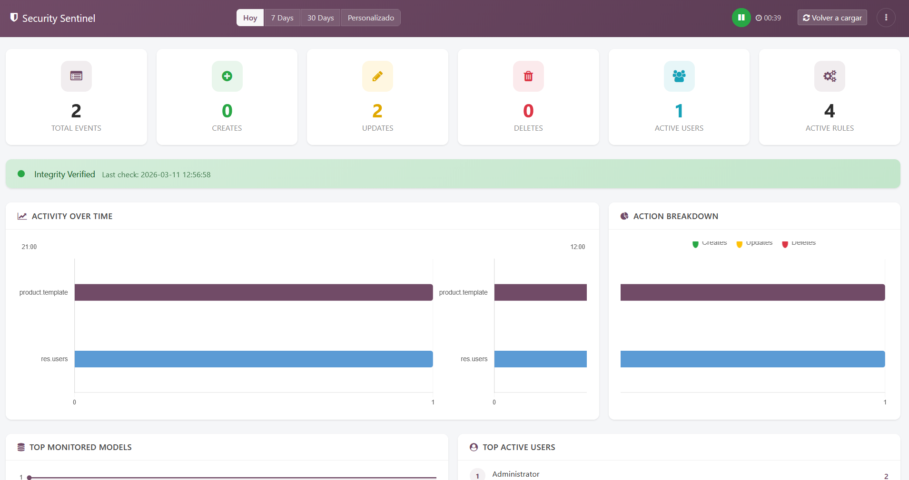
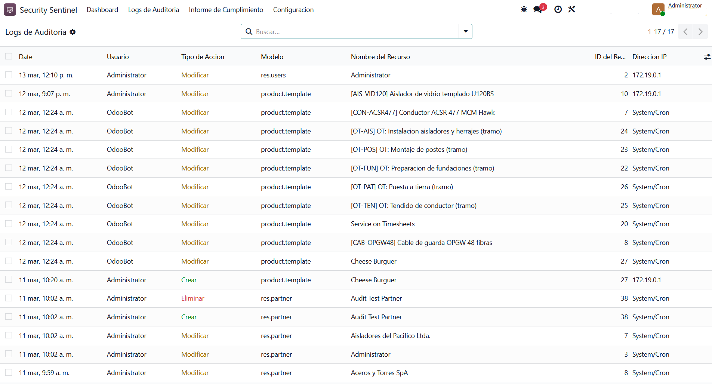
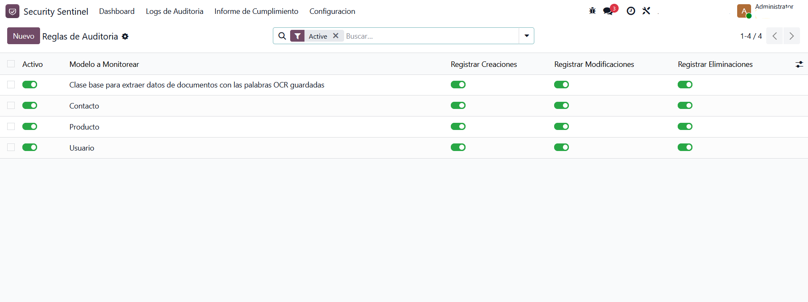
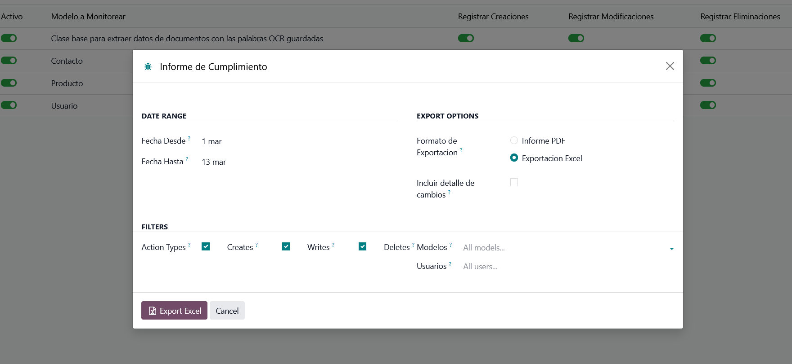

|
01
No native audit trail
Odoo’s built-in logging won’t tell you who changed what, when, and from which IP — let alone prove the log itself was never altered.
|
02
Invisible manipulation
A user with the right permissions can change a price, delete a record or edit financial data with no visible trace. By the time you notice, it is done.
|
03
Compliance demands
ISO 27001, SOX and GDPR require immutable, provable audit trails. Spreadsheets and ad-hoc reports are not enough to satisfy an auditor.
|
|
Real-time OWL dashboard
Live KPIs, activity-by-hour charts, top models and users, and integrity status — in one fast OWL component, no page reloads.
|
Tamper-evident HMAC chain
Each entry is sealed with a chained HMAC-SHA256 over user, action, IP, company and data. Editing, deleting or reordering any record breaks the chain.
|
|
Sensitive-data masking
Passwords, tokens, API keys, IBAN and card numbers are stored as <redacted> at the source — never in clear text, not even in exports.
|
Automated integrity checks
A scheduled cron recomputes the full chain and instantly alerts Compliance Officers on any tampering, deletion or reordering.
|
|
Role-based detail access
Audit User sees metadata only; change details and detailed exports are restricted to the Compliance Officer. Separation of duties by default.
|
Compliance reports
Audit reports by date range with full change history. Export to PDF for auditors or Excel for analysis, from a one-click wizard.
|


|
FIG. 03 — AUDIT RULES
 |
FIG. 04 — REPORT WIZARD
 |
| 01 |
Install & activate
Audit hooks are injected into Odoo’s core create, write and unlink via a safe, double-patch-guarded ORM extension that leaves the rest of Odoo untouched.
|
| 02 |
Define what matters
Pick the models — and optionally the exact fields — you want audited. Everything else is ignored, so the log stays signal, not noise.
|
| 03 |
Every change, sealed
From then on each change is recorded with user, IP, old/new values and a chained HMAC seal — read-only, immutable, and linked to the entry before it.
|
| 04 |
Monitor & prove
Watch the live dashboard, export compliance reports for auditors, and let the integrity cron verify the whole chain — alerting officers the moment anything breaks.
|
| ODOO VERSION | 17.0 · also published for 18.0 and 19.0 |
| MODULE VERSION | 17.0.2.1.5 |
| INTEGRITY | Chained HMAC-SHA256 with per-record previous-hash link · versioned (legacy SHA-256 still verifiable) |
| ORM HOOK | Safe patch on create / write / unlink, savepoint-isolated · double-patch guard · uninstall hook |
| PERFORMANCE | 5-minute rule cache · composite DB indexes · batch SQL · concurrency-safe chain append |
| REPORTS | PDF (QWeb) and Excel · formula-injection-safe export |
| LICENSE | OPL-1 (Odoo Proprietary) · English & Spanish included |
|
Insider-proof by design
Even a database administrator can’t silently alter a record — any change breaks the cryptographic chain and surfaces on the next check.
|
Built for multi-company
Every event is tagged by company. Compliance Officers see the whole group consolidated; auditors are scoped to their own entities.
|
Audited & hardened
Reviewed line-by-line against a real client security audit — twenty findings closed in 2.1.5, from masking to chained integrity.
|
|
Built by NeuroDev
Security & audit tooling for Odoo. Questions about installation, multi-company setup or a feature request — we answer.
|
@ neurodev.odoo@gmail.com
★ github.com/neurodev-apps
◇ neurodev.cl
|